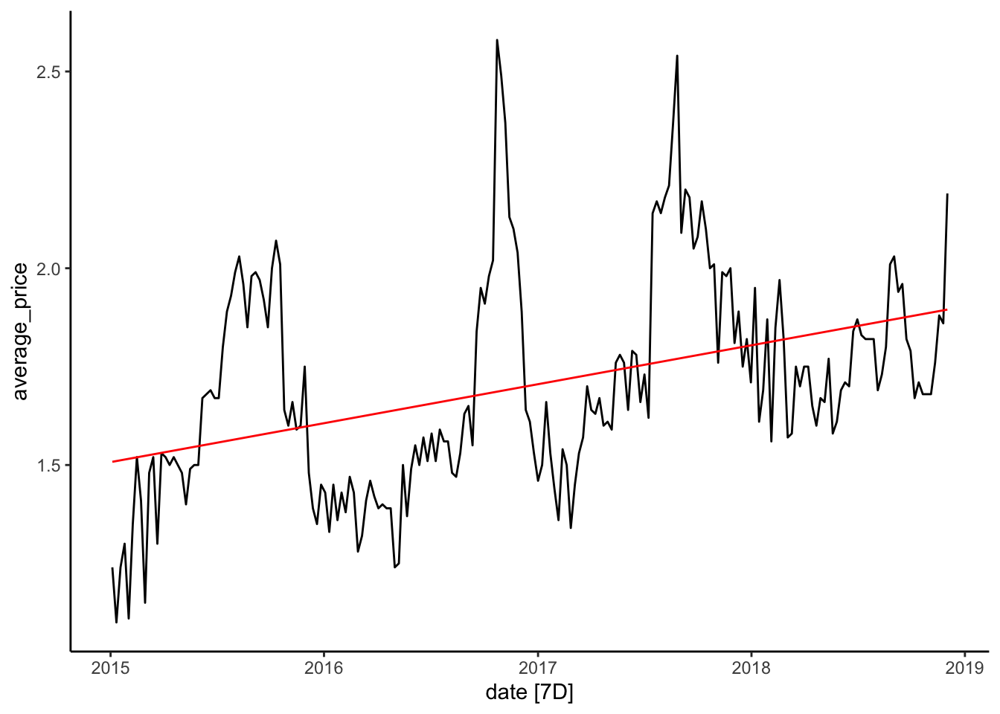

5 The Forecasting Process (Benchmarks)
This module will introduce the forecasting procedure by illustrating the process with four different benchmarks (Naive, LS, Mean, and Drift). We will calculate accuracy measures for each of these benchmarks (e.g., Mean Error, Mean Absolute Error, Root Mean Squared Error). In general, accuracy measures compare the fitted values with the actual values. A good model will account for most of the series’s variation, leaving a small random error. We will ensure that we do not over fit a model to a training set by assessing its accuracy using a test set.
5.1 Benchmarks
Perhaps one of the most intuitive (but Naive) predictions we can make about the future is to expect that the value of a variable will behave as it did in the past. A Naive prediction sets the prediction of a future period to the value of the preceding period. Your weight tomorrow is predicted to be the same as the weight observed today. Mathematically:
\(\hat y_{T+h}=y_T\)
We can adjust the Naive prediction by accounting for some natural drift (an increase or decrease). As kids grow, we might expect their weight to be close to the previous measurement but slightly higher as we need to account for growth. Mathematically we would say:
\(\hat y_{T+h}=y_T+h(\frac{y_t-y_1}{T-1})\)
One could also predict weight by observing your weight during a period and averaging the values. Every day the data recorded would be slightly different, but if diets, exercise, sleep, etc., remain relatively constant, the mean can be a good predictor of your future weight. Mathematically:
\(\hat y_{T+h}=\frac{(y_1+y_2+...+y_T)}{T}\)
Lastly, we can use the weight data collected from a period and observe if there is any trend. If we find ourselves motivated to lose weight we can start recording our weight every day. Ideally, we will start seeing the effect of a diet, exercise and healthy sleep in the data. We can predict tomorrows weight by taking into account the downward trend of our weight. Formally:
\(\hat y_{T+h}=b_0+b_1(T+h)\)
5.2 Predicting the Avocado Data
Let’s apply the forecasting methods to the average prices for avocados in California. Start by loading the fpp3 package and importing the data from https://jagelves.github.io/Data/CaliforniaAvocado.csv. Recall, that we can create a tsibble from the csv file by using the as_tsibble() function.
cali %>%
as_tsibble(key=c(geography),
index=date, regular=T) -> calitsWe’ll create a time variable so that we can run the Least Squares method. An object with the fit of every method discussed above is then created with the model function.
calits %>% mutate(time=1:n()) -> calits
fit <- model(calits,mean=MEAN(average_price),
Naive=NAIVE(average_price),
Drift=RW(average_price~drift()),
LS=TSLM(average_price~date))augment(fit)# A tsibble: 820 x 7 [7D]
# Key: geography, .model [4]
geography .model date average_price .fitted .resid .innov
<chr> <chr> <date> <dbl> <dbl> <dbl> <dbl>
1 California mean 2015-01-04 1.24 1.70 -0.462 -0.462
2 California mean 2015-01-11 1.1 1.70 -0.602 -0.602
3 California mean 2015-01-18 1.24 1.70 -0.462 -0.462
4 California mean 2015-01-25 1.3 1.70 -0.402 -0.402
5 California mean 2015-02-01 1.11 1.70 -0.592 -0.592
6 California mean 2015-02-08 1.35 1.70 -0.352 -0.352
7 California mean 2015-02-15 1.52 1.70 -0.182 -0.182
8 California mean 2015-02-22 1.41 1.70 -0.292 -0.292
9 California mean 2015-03-01 1.15 1.70 -0.552 -0.552
10 California mean 2015-03-08 1.48 1.70 -0.222 -0.222
# … with 810 more rowscoef(fit)# A tibble: 4 × 7
geography .model term estimate std.error statistic p.value
<chr> <chr> <chr> <dbl> <dbl> <dbl> <dbl>
1 California mean mean 1.70 0.0189 89.8 5.20e-166
2 California Drift b 0.00466 0.00938 0.497 6.20e- 1
3 California LS (Intercept) -2.94 0.716 -4.11 5.63e- 5
4 California LS date 0.000271 0.0000417 6.49 6.28e- 10calits %>% autoplot(average_price) + theme_classic() +
geom_line(aes(y = .fitted), col="red",
data = augment(fit) %>% filter(`.model`=="LS"))
5.3 Accuracy
We will assess the fit of our models by comparing the fitted values against actual values. How far the fitted values are from the actual values will determine how well our model fits the data. If we square all of the distances (i.e., errors) and then average them, we calculate the Mean Squared Error (MSE). Utlimately, how we decide to aggregate our errors will determine our measure of accuracy. For example is we follow the same procedure as the one for MSE’s but then find the square root, we have caluclated the RMSE. If we are to determine the ability of our model to predict values, we will instead compare forecasted values (derived from a training set) to a test value (or values). The training set is data that will allow us to fine-tune our model. On the other hand, the test set was not used to develop the model. By following this procedure, we ensure that our model doesn’t simply replicate the behavior in the training set but instead teases out the essential factors in the series that will allow us to forecast general tendencies effectively.
accuracy(fit)# A tibble: 4 × 11
geography .model .type ME RMSE MAE MPE MAPE MASE RMSSE ACF1
<chr> <chr> <chr> <dbl> <dbl> <dbl> <dbl> <dbl> <dbl> <dbl> <dbl>
1 Californ… mean Trai… 4.02e-17 0.270 0.216 -2.50 12.9 2.25 2.02 0.863
2 Californ… Naive Trai… 4.66e- 3 0.134 0.0961 -0.0280 5.72 1 1 -0.188
3 Californ… Drift Trai… -1.63e-17 0.134 0.0963 -0.308 5.73 1.00 0.999 -0.188
4 Californ… LS Trai… -5.41e-18 0.246 0.194 -2.00 11.3 2.02 1.84 0.847cali_fc<- fit %>% forecast(h=4)
cali_fc %>% autoplot(level=NULL) + theme_classic() +
autolayer(calits, average_price) +
geom_line(aes(y = .fitted), col="#D55E00",
data = augment(fit) %>% filter(`.model`=="mean"))
5.4 Leasons Learned
In this module you have been introduced to the general procedure in forecasting time series.
- Learning how create forecasts with simple heuristics.
5.5 Readings
Hyndman (2021) chapter 5.